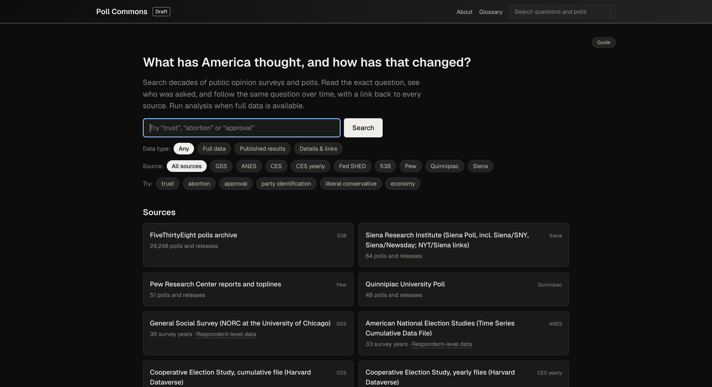
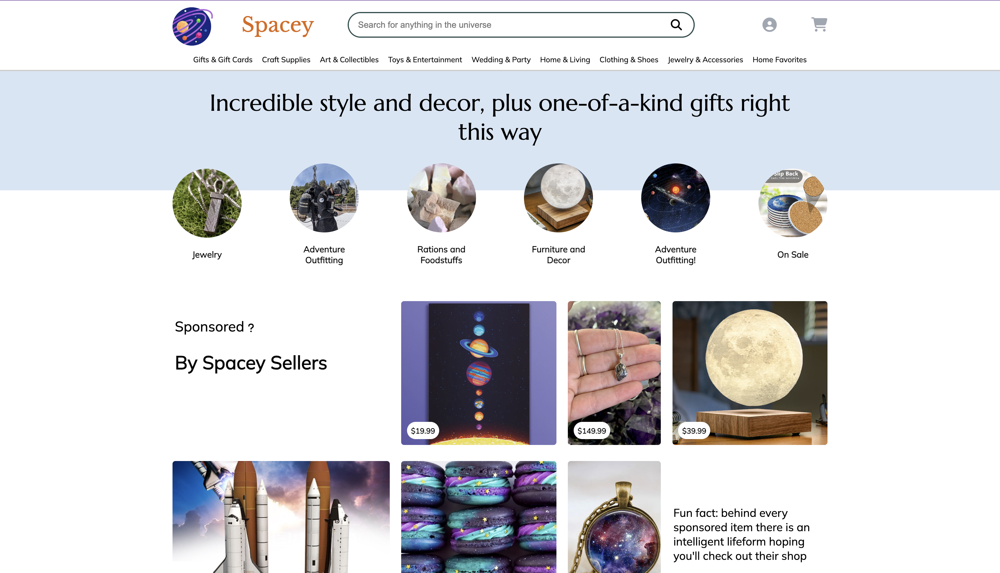

Vision
It’s easy to look at the world today and feel discouraged or powerless. Technology already has enormous
influence over our lives. At the same time, there are many causes out there that require our society to
mobilize, such as climate change, poverty, and stopping war. Handling them all can seem
like an ideal rather than a goal, something nice to talk about but seen as wishful thinking.
But it’s not idealistic to be hopeful. We can participate in making our world better.
I believe civic technology is key to facilitating our transition to a better world, not just for society as a
whole but also for every person as an individual. Technology can help people become more politically
engaged, to be not just informed but passionate about their local communities and nation.
I’ve come to focus on one piece towards moving civic technology forward: making data more accessible. It
started with election results and ballot images at Civera. Now it's polling data.
I encourage you to check out my work towards that end, a free, public site dedicated to giving people
polling data to browse, as well as equipping them with the tools to become their own experts. If even one person
visits the site and learns something new about polling, then it's a success as far as I’m concerned.
Check it out at pollcommons.org.
Projects
Poll Commons (Python / Dagster / Polars / DuckDB / FastAPI / Next.js)

An open site for U.S. public opinion data: search decades of survey questions, see the exact
wording, follow trends over time, and build weighted crosstabs with significance testing. The stack
includes Python pipelines (Dagster, Polars, DuckDB) that turn data from the major
academic surveys (GSS, ANES, the Cooperative Election Study and more) into one searchable catalog,
served by a FastAPI API and a Next.js site.
Earlier work (App Academy, 2022–2023)
GroupUp (React / Redux / Flask / SQLAlchemy / Postgres)

GroupUp is an Overwatch themed social media application modeled after the site Meetup.
Spacey (React / Redux / Flask / SQLAlchemy / Postgres)

Modeled after the shopping site Etzy, users can buy and sell space themed merchandise.
About
I’m a data engineer with a background in public opinion research. My path started in college, where I mostly studied government. I took courses on statistics, political theory, modern research methods, etc. Then by junior year I wanted to be a pollster, so I specialized further within the government department. I studied survey research methods, modern political campaigns, and I took a class on polling itself, where we designed a poll and analyzed the results after an outside firm fielded it. Polling in that class was so fun I signed up to take the graduate version as a research assistant the following semester, where we ran another poll and I co-authored a research paper on the policy knowledge among American “elites”, a term that was emphasized in the media discourse at that time.
I also spent two years volunteering as a pollster for the Harvard Public Opinion Project at the Institute of Politics, where we designed and fielded our own survey every semester. I enjoyed the progression from student to mentor, working with students and the school’s resident pollster, John Della Volpe, to draft, refine, and analyze survey questions before presenting our findings to the media.
But my favorite learning opportunity was a class on Progressive Alternatives at Harvard Law School, taught by Professor Roberto Mangabeira Unger. It shaped much of my personal philosophy today, instilling in me a hope and belief that we have the power to improve our lives and the lives of our children.
After college I worked for two and a half years as an analyst for SocialSphere, John Della Volpe’s firm. Working with data was fun, but over time I realized I wanted to develop more universal skills, not just expertise with the software we used to design, field, and analyze polls. I left SocialSphere and found my way to the full-time coding bootcamp at App Academy. The six-month program covered full-stack web development, touching on Python, JavaScript, React, PostgreSQL, Express.js, Flask, etc.
After finishing the bootcamp I started at Civera in 2023 and worked there for three years. I helped build their data pipelines, coordinated with stakeholders and clients, and developed a specialty in data engineering (see my resume for more details). The work fostered my passion for civic technology: we took historical election results and ballot images and put them on a public website as a searchable database. My work at Civera inspired me to build Poll Commons, which does the same for polling data, presenting it to the public complete with search, graphics, trends, and tools for analysis. I’m grateful for the experiences Civera offered me as I take the next step in my career.
These days I remain passionate about civic tech but am open to working in other industries. I believe there are lots of ways tech can make people’s lives better. I enjoy walks in the outdoors, keeping up with WNBA and NBA basketball, and practicing a lightsaber-based sparring sport called LudoSport!
Interested in working with me? Let’s connect! Email me at christopher.macmaster@gmail.com or find me on LinkedIn.
Contact